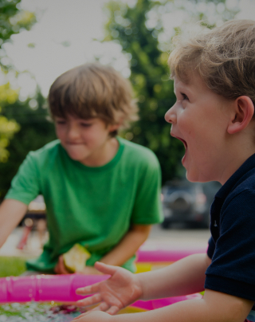
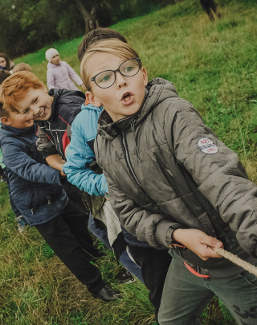
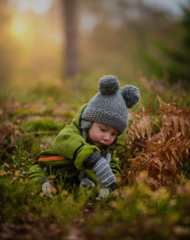
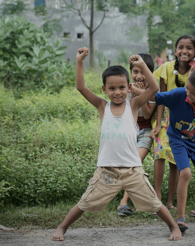
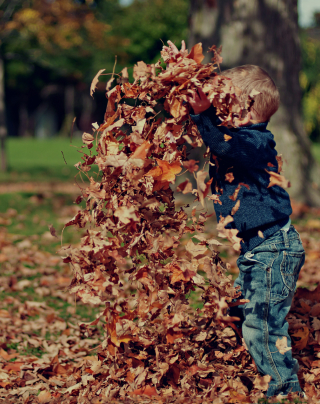
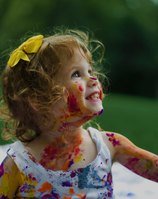
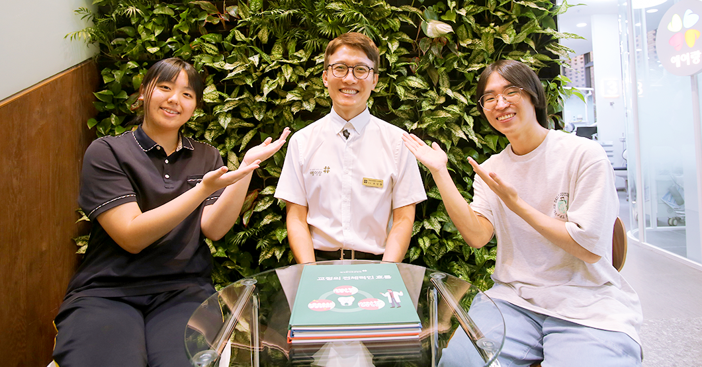
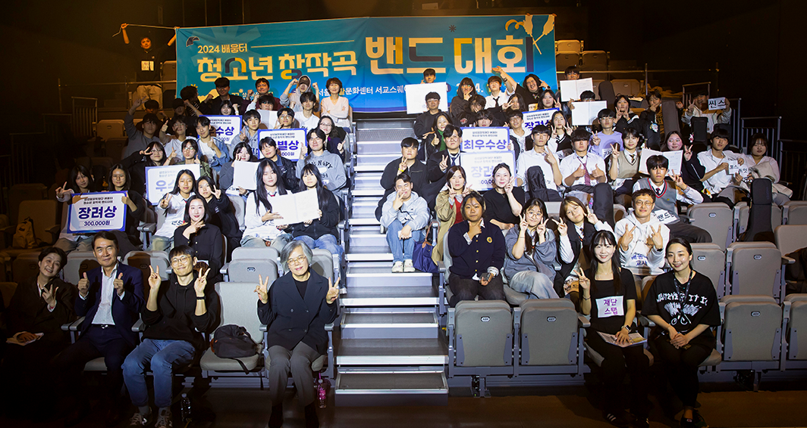

사람이 있는 곳을 지원하며,
사람을 통해 사람을 키웁니다.
장학생들의 다양한 잠재력을 이끌어낼 수 있는 교육기회를 제공합니다.
더불어 성장하는
배움공통체
다양한 교육의 기회를 함께 나눕니다.
-

리더육성
장학사업청소년들이 멘토 선생님의 교육적·정서적 지지를 받으면서 자신의 꿈을 찾고 재능을 개발할 수 있도록 장학금을 지원하는 사업
자세히보기 -

멘토링
꿈장학사업재단 출신 꿈장학생 가운데 성장이 돋보이고 학업역량 및 의지가 우수한 대학(원)생을 선발하여 지원하는 사업
자세히보기 -

배움터
교육지원사업지역의 다양한 배움터들이 협력하여 양질의 교육프로그램을 운영하고 교육복지 안전망을 구축할 수 있도록 지원하는 사업
자세히보기 -

글로벌
장학사업역사적 상황으로 불가피하게 흩어진 한인후손과 개발도상국 현지 아동·청소년을 교육적으로 지원하고 글로벌 리더로 양성하는 사업
자세히보기 -

방과후
학교 대상매년 1월 교육부가 주최하여, 우수한 방과후학교 프로그램을 운영하는 학교, 교사, 비영리단체를 시상
자세히보기 -

청소년치아교정
지원사업재단 꿈장학생 중 치아교정이 필요하나 가정형편으로 인해 적절한 치료를 받지 못한 청소년에게 무료 치아교정의 기회를 제공하는 사업
자세히보기
장학재단 활동
-
배움터 교육지원사업/우수사례
 배움터 교육지원사업/우수사례
배움터 교육지원사업/우수사례
온·오프라인 ‘우리 동네’에서 다 같이(多가치) 성장하는 우리들
‘우리’가 만든 메타버스 동네에는 나와 친구들이 좋아하는 것들로 가득하다. 남들에게 꼭 자랑하고 싶은 배움터 수업장소 ‘우리동네청년연구소’, 호만천을 가로지르는 다리들, 매일 거니는 평내호평역, 밤하늘의 별들을 머리에 인 채 남양주 시내를 굽어보고 있는 천마산까지. 아이들의 삶과 추억이 담긴 이곳은 세계 180여 개 국가에서 하루 7,700만 명이 이용하는 메타버스 플랫폼 로블록스에 구현돼 있고, 아이들은 이 공간을 생생한 빛깔로 채워나가는 중이다.
-
멘토링 꿈장학사업
 멘토링 꿈장학사업
멘토링 꿈장학사업
장학생 스스로의 힘을 이끌어낼 ‘멘토링 소통법’을 배우다
연일 폭염경보가 쏟아지던 여름 한가운데, 전국 각지에서 멘토 선생님들이 모였다. 꿈장학 멘토로서의 역량을 키우고자 배움의 기회를 찾아 재단의 문을 두드린 것이다. 멘토 선생님들은 이날 멘티의 실질적인 성장과 문제해결에 초점을 맞춘 소통과 대화의 기술에 대해 배우고, 비슷한 상황에서 장학생의 꿈을 키워주기 위해 고군분투하는 동료 멘토들과 마음을 나눴다.
-
글로벌 희망장학사업
 글로벌 희망장학사업
글로벌 희망장학사업
글로벌 희망장학생들이 함께 만들어갈 꿈의 시너지
오로지 꿈을 이룰 수 있다는 희망 하나로 한국행을 결심한 장학생들. 하지만 낯선 언어와 문화에 적응하는 것부터 녹록지 않은 유학생활로 인해 몸과 마음이 조금씩 지쳐갈 무렵, 마음 깊은 곳에 간직하고 있던 꿈에 대한 진심을 담아 재단에 문을 두드린 장학생들이 마침내 ‘글로벌 희망장학생’이라는 이름으로 하나가 됐다.
-
 청소년치아교정지원사업/우수사례청소년치아교정지원사업/우수사례
되찾은 환한 미소로 꿈을 향해 전진하다
어떤 만남은 우연처럼 다가왔다가 평생 잊을 수 없는 운명이 되기도 한다. 콤플렉스인 돌출된 치아를 가리기 위해 늘 어색한 미소를 지어야 했던 수인이와 승환이는 삼성꿈장학재단의 청소년치아교정지원사업으로 주상환 치과 선생님을 만나고 환한 웃음을 되찾을 수 있었다.
-
 배움터 교육지원사업배움터 교육지원사업
배움터 청소년 밴드가 직접 만들고 부르는 노래
삼성꿈장학재단은 ‘2024 배움터 청소년 창작곡 밴드대회’를 11월 2일 토요일에 서울생활문화센터 서교스퀘어에서 개최했다. 올해 처음 진행된 이 대회는 배움터 청소년 밴드팀의 성장을 확인하고 청소년 창작 문화의 확산에 기여하기 위해 마련됐으며, 전국 각지 배움터의 총 17개 밴드팀 중 1차 영상심사를 통과한 총 8개의 청소년 밴드팀이 자작곡을 가지고 참여했다.